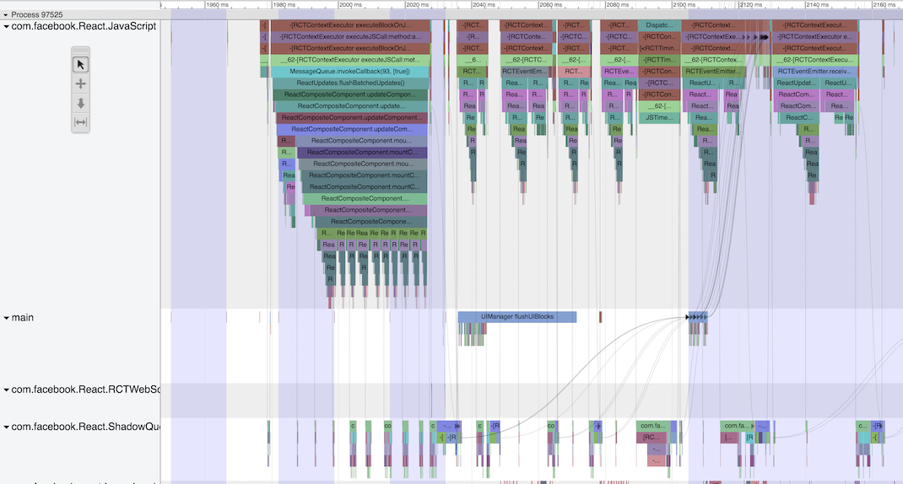
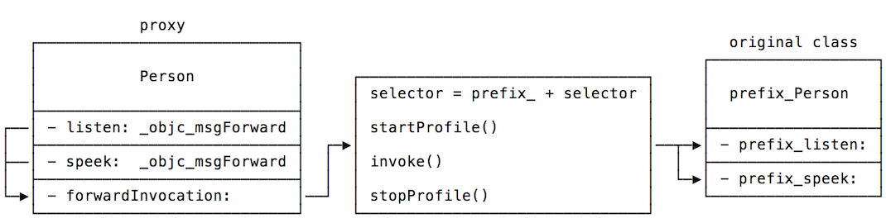

Context
React Native has different characteristics than “regular” iOS and JavaScript development, understanding the flow of events across the stack, even working on it, can be complicated sometimes. In order to make easier, I’ve been working on a custom profiler for React Native, inspired by Android systrace and using the same front-end, Google trace-viewer.

Goal
My initial goal was to visualise at least what was happening in the Native Modules, so I started manually adding markers to the critical parts of the framework, like the Bridge and the UIManager, but what I really wanted was to have markers in every method of every native module, and manually adding markers is not only inefficient, but impossible when it comes to third-party code. Doing it dynamically also has the benefit of having zero overhead when the profiler is not running - the code paths don’t even exist unless you activate the profiler.
Since all the modules are registered with the bridge, and Objective-C is very dynamic, we can simply add markers to all the module’s methods at runtime, so the actual goal here is to execute something before the method body - mark the start of the method, and after the method body - mark the end of the method.
- (void)myMethod {
profilerBegin(@"myMethod"); // We need to execute this prologue
// method body
profilerEnd(@"myMethod"); // and this epilogue
}Objective-C has everything we need to introspect the classes, find the methods, and replace them, but… what do we replace them with? How do you still call the original method with a variable number of arguments?
NSInvocation
So my initial approach¹ was inspired by Peter Steinberger’s Aspects library, but much less flexible, since I only needed a very specific prologue and epilogue.
The basic idea behind the implementation was allocating a new class pair, and for every method in the class, we’d first rename it by adding a prefix, and add it (without the prefix) to the new class. The new class’ implementation however was only _objc_msgForward, which forwards the message, we then implement the forwardInvocation:² method, which takes a NSInvocation instance ready, with the object with are calling, the selector and all the arguments. Done!
All we need to do now in -forwardInvocation: is:
- prepend the prefix we used when renaming the method to selector,
- start the profiler,
- invoke the
NSInvocation, - stop the profiler,
- return the invocation result.

1. the original implementation can still be found here 2. see the Apple’s Message Forwarding guide for more informationAssembly version
Everything was already working, why bother to implement it in assembly? Well, NSInvocation is slow (here are some benchmarks to have an idea), usually it’s alright out of critical paths, but wrapping every method in it, for profiling reasons, is not great.
Plus, it’s a much easier problem to solve in assembly!
Let’s look at a basic example: you have a function A, that’s only a proxy for void B(void), how do you solve it in C?
void A(void) { B(); }That’s easy, but what if A now has to proxy to both, B and add, but B returns void and takes no arguments, and add takes two ints and returns the sum as one int. It’s not possible. The language semantics don’t support it, you’d have to convert both functions to take va_args, but if you fall back to assembly, it’s as simple as:
A:
; some logic to decide between jmp_B and jmp_add
jmp_B:
jmp B
jmp_add:
jmp addAll the arguments are in the right registers, or in the right position in the stack, all we have to do is execute the target method - just jmp to it.
These functions, that basically only redirect to another function, like objc_msgSend, are sometimes called trampolines. In fact the x86_64 implementation I’m going to present is heavily inspired in the original objc_msgSend implementation and Mike Ash’s post “Let’s Build objc_msgSend”, the main difference is that objc_msgSend calls the underlying function and returns directly to it’s caller, i.e. there’s no epilogue.
x86_64 - calling conventions
In order to do anything properly in assembly, we first need to understand the calling conventions, you can look at the Register Usage in Figure 3.4, but I’ll add here only the bits we need:
- Callee-saved registers: these registers’ values will be preserved across function calls (which also means that we have to restore its value before returning)
- I’ll just be using
%r12,%r13and%r14- check the calling conventions for the full list.
- I’ll just be using
- Argument registers:
%rdi,%rsi,%rdx,%rcx,%r8and%r9hold the first 6 quad-word arguments (pointers and integers).%xmm0to%xmm7are used to pass floating point arguments%raxis used in variable-argument calls to store the number of SSE registers
It’s also important to understand the stack layout. All the arguments that don’t fit in the registers will be put in the stack. Plus, when you call a method, using the call instruction, it’ll push the return address onto the stack, so when the called function calls ret, it knows the right address to return.
Designing the trampoline
High-level design:
- Store all the argument registers
- Determine the address of the “actual function”
- Start profiling
- Restore the argument registers
- Call the “actual function”
- Save the returned values
- Stop profiling
- Restore the returned values
- Return to the caller
Simple, right? Yes, but if you’ve been paying close attention you might have noticed that at the point that we call the “actual function” we have to restore all the registers and all the stack state, e.g. everything has to look exactly the same as it did at the beginning of the function, except the return address, since we want the “actual function” to return to the trampoline rather than to its caller.
The catch is that when we replace the return address with ours instead of the caller we have nowhere to store the original return address (so we can return to it at the end): we can’t store it in the stack, because it can’t contain any extra values; we can’t store it in temporary registers, because their value is not guaranteed to be preserved across the function call; we could store it in callee-saved registers, but we’d need to restore the register’s original value at the end of the function, and then we’d have the same problem to store it…
Which bring us to the heap, we can allocate a small block of memory, so we can save the return address! But where do we save the block of memory’s address? The idea here is to allocate the size of two registers: we store the original value of two callee-saved registers there, and then we use the callee-saved registers (%r14 and %r13 in this case) to store the block of memory’s address and the original return address, respectively.
So our design now looks a bit more like:
- Store all the argument registers
- Determine the address of the “actual function”
- Allocate a 16-bytes in the heap
- Save two callee-saved registers in the heap memory
- Save the memory address in callee-saved register #1
- Start profiling
- Restore the argument registers
- Pop the original return address from the stack into callee-save register #2
- Call the “actual function” (this will push our return address onto the stack)
- Save the returned values
- Stop profiling
- Restore the callee-saved registers and free the allocated memory
- Restore the returned values
- Return to the caller
Storing all the argument registers
First thing we need to do is to store all the argument registers, this way we can be sure we won’t miss any parameters when we call the “actual function” after the prologue execution.
Once you know which registers need to be stored, this is the simplest part, all you need to do is save everything in the stack.
For the word-size registers, all we need to do is push (the q suffix is just to make it explicit that it’s a quad-word instruction, i.e. 8-bytes):
pushq %rdi
pushq %rsi
pushq %rdx
pushq %rcx
pushq %r8
pushq %r9
pushq %rax%xmm
registers: they hold the floating point arguments, and they can’t be simply
push
ed. We have to subtract the size we need from the stack (each register is 16-bytes) and move them using the
movdqa
1
command:
subq $0x80+8, %rsp ; 8 x 16-bytes xmm registers + 8-bytes alignment for example
movdqa %xmm0, 0x70(%rsp)
movdqa %xmm1, 0x60(%rsp)
movdqa %xmm2, 0x50(%rsp)
movdqa %xmm3, 0x40(%rsp)
movdqa %xmm4, 0x30(%rsp)
movdqa %xmm5, 0x20(%rsp)
movdqa %xmm6, 0x10(%rsp)
movdqa %xmm7, 0x00(%rsp)movdqa
stands for “move double quad-word aligned” - which means that this instruction expects the stack to be 16-byte aligned (i.e. the stack pointer’s value,
%rsp
, has to be a multiple of
16
), otherwise it’ll crash.
Getting the “actual function” address
Based on the arguments used to call the trampoline we now have to find the address of the original implementation, which we’ve referred to as the “actual function”. There are a couple assumptions that make it easier:
- Since we are only profiling Objective-C methods, we’ll always receive the target object,
self, and the selector,_cmd, as the first two parameters - As part of the proxy class creation we implement the
-classmethod such that it returns the original class instead of the proxy one
This way we can get the original class from the object, and it’ll contain the original method implementation. This is actually implemented as a one line C function:
IMP RCTProfileGetImplementation(id obj, SEL cmd) {
return class_getMethodImplementation([obj class], cmd);
}We also know that these were the same first two arguments passed to the trampoline, so we don’t even need mess with the parameter registers, we can just call it straight after saving the registers:
call _RCTProfileGetImplementationSave registers in the heap
At the moment we call the “actual function” we won’t be able to keep state neither in registers nor in the stack, so we allocate a small memory block in the heap to keep the information that has to be preserved across the call.
Allocating memory in the heap is as easy as calling malloc, then we just mov the registers to the memory and mov the memory address to the callee-saved registers, so we can access it later.
movq $0x10, %rdi ; put 16 on the first parameter register, to allocate 16 bytes
callq _malloc ; call malloc(16), the address will be returned in %rax
mov %r13, (%rax) ; save callee-saved register %r13 in the first 8-bytes
mov %r14, 0x8(%rax) ; save callee-saved register %r14 in the second 8-bytes
mov %rax, %r14 ; save the memory address in the callee-saved registerStart profiling
Now we just need to start the timer before calling the “actual function”, the function that actually starts the profiler is another one line C function:
void RCTProfileTrampolineStart(id obj, SEL cmd) {
RCT_PROFILE_BEGIN_EVENT(0, [NSString stringWithFormat:@"-[%s %s]", class_getName([obj class]), sel_getName(cmd)], nil);
}It takes the same two arguments as RCTProfileGetImplementation (used to identify the method), and call the macro that actually starts measuring.
However, in this case the arguments that we need to pass to function are not in the right registers anymore, so we have to retrieve it from the stack (the sample code is using the offsets that are currently being used in the actual source):
movq 0x40(%r12), %rdi ; object - type `id` (pointer) in the 1st argument register
movq 0x38(%r12), %rsi ; selector - type `SEL` (pointer) in the 2nd argument register
callq _RCTProfileTrampolineStartRestore the state
Before we call the “actual function” we have to make sure we put all the arguments that were passed to the trampoline back in the right registers, so we pass all the parameters along. We also need to remove anything we saved on the stack, such that the stack pointer has the same value it had at the begin of the function.
This part is very similar to storing the arguments, except that we have to pop from the stack instead of pushing, and call movdqa with the parameters switched, so that we move it from the stack to the registers. I won’t add the code here because it’s not only very similar, but also very repetitive. Also, the whole code will be available at the end.
Pop the original return address + call the “actual function”
Now that all the registers and the stack are in the exact same state as they were at the moment that the trampoline was called, and the profiler is already running, we can safely call the “actual function” we want to measure.
Before that, we must have stored the “actual function”s address in the stack, and as part of restoring the state we must have poped the “actual function”s address from the stack into some register. The original implementation stored it in the temporary register %r11, so I’ll assume it here:
popq %r13 ; save the original memory address
callq *%r11 ; call the original function - this will automatically push the new return addressSave the returned values
Now that we have called the “actual function” we have to preserve all the registers that might possibly contain a return value (or part of it).
We’ll push onto the stack the value-return registers, i.e. %rax and %rdx for the 8-bytes values and %xmm0 and %xmm1 for floating point return values:
pushq %rax ; 1st return register
pushq %rdx ; 2nd return register
subq $0x20, %rsp ; allocate the space for 2 16-bytes xmm register
movdqa %xmm0, 0x00(%rsp) ; 1st floating point return register
movdqa %xmm1, 0x10(%rsp) ; 2nd floating point return registerStop profiling
We already executed everything that should be measured, and the return values are safe, so now we can stop measuring.
Again, the stop profiling function is implemented in C and all it does is calling a macro:
void RCTProfileTrampolineEnd(void) {
RCT_PROFILE_END_EVENT(0, @"objc_call,modules,auto", nil);
}And we only need to call it, since it doesn’t expect any arguments:
callq _RCTProfileTrampolineEndRestore the callee-saved registers and free the allocated memory
As explained above, the callee-saved registers are the ones whose value is preserved when you call a function, which also implies that at the end of our functions, if we have modified them, we must restore their original values.
We have to make sure to save the value currently stored in the callee-saved register %r13 before we restore it. This register holds our caller’s address, to where we need to jump once we are done.
Finally, after we restore the registers’ original values, we can free the memory.
pushq %r13 ; save the caller's address in the stack
movq %r14, %rdi ; move the heap's address to %rdi
; restore the callee-saved registers
movq 0x0(%r14), %r13
movq 0x8(%r14), %r14
callq _free ; call free, since the address has already been placed in %rdiRestore the returned values and return to the caller
All the work is done, we just have to restore the return registers so they have the same value as after the “actual function” returned. This is the same as returning any value that the “actual function” might have possibly returned.
popq %rcx ; pop the return address into a temporary register
movdqa 0x00(%rsp), %xmm0 ; 1st floating point return register
movdqa 0x10(%rsp), %xmm1 ; 2nd floating point return register
addq $0x20, %rsp ; return the size used for the two registers above
popq %rdx ; 2nd return register
popq %rax ; 1st return registerLast but not least, we jmp to our caller’s next instruction, so it keeps going on executing:
; jump to caller
jmpq *%rcxNotes
- The full code, currently being used in React Native, can be found in the GitHub repo and has lots of comments.
- The snippets here don’t deal with memory alignment: the stack has to be 16-byte aligned before calling a function or operating on xmm and sse registers.
- The snippets also don’t match 1:1 with the current code, in some points I tried to make it simpler, in others I just thought it could be improved and will update the source code later.
- The repo also contains the
i386,armv7andarm64versions, have fun.
Assembly is fun! :D
External links
- React Native
- Android Systrace
- Google trace-viewer
- React Native’s “Native Modules”
- React Native’s “Bridge”
- React Native’s “UIManager”
- Aspects by Peter Steinberger
- objc_allocateClassPair docs
- _objc_msgForward’s header file
- Message Forwarding docs
- NSInvocation class reference
- Original RCTProfile implementation
- Objective-C method invocation benchmarks
- objc_msgSend docs
- objc_msgSend x86_64 implementation
- “Let’s Build objc_msgSend” by Mike Ash
- AMD64 ABI reference
- Trampoline x86_64 full implementation